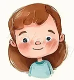
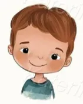
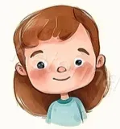
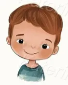

India's rich toy heritage comes alive! Discover beautifully crafted toys that blend tradition and creativity, from wooden wonders to hand-painted treasures. Each Khilona toy brings joy, imagination, and a touch of Indian artistry to every playtime.
 


